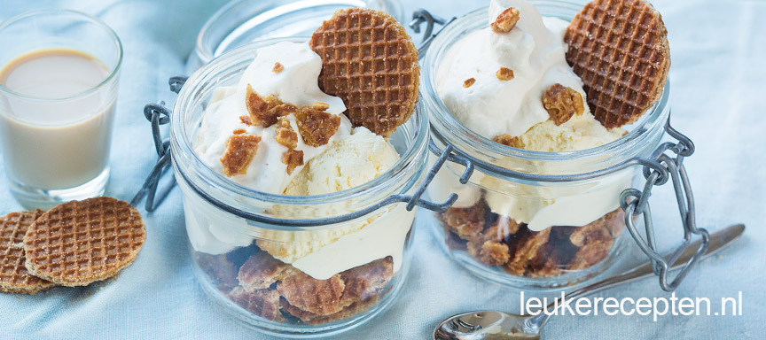

Baileys stroopwafel toetje
Super simpel en snel toetje met stroopwafels, ijs en Baileys room
Ingrediënten
4 bollen ijs(vanille)
200 ml slagroom(koud)
1 zakje ministroopwafels
1 borrelglaasje baileys(30ml)
2 eetlepels suiker
Bereidingswijze
- Doe de slagroom in een kom en voeg de suiker en Baileys toe. Mix tot hij stijf is
- Kruimel per glas 4 mini stroopwafels en bewaar in ieder geval 4 hele voor de garnering.
- Verdeel de koekkruimels over de glazen en schep een lepel ijs er bij.
- Schep vervolgens wat van de Baileys slagroom er op en steek er een mini stroopwafel in. Garneer nog met wat fijne stroopwafel kruimels.

Ook lekker om dit te maken met oreo's